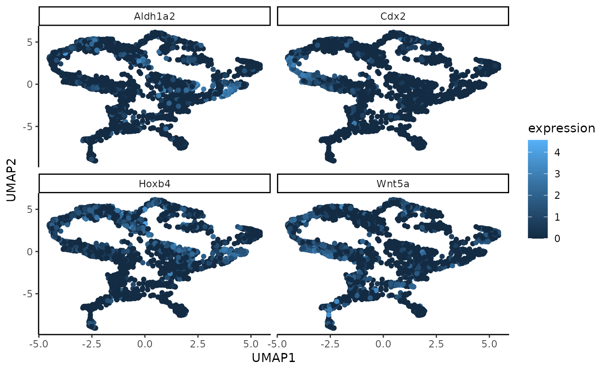

A function to plot a UMAP generated on the low-dimensional embedding of the gene expression data. The points are coloured by their value for the genes with highest (in absolute value) loading in a selected WSIR direction, by default WSIR1.
Arguments
- exprs
matrix containing normalised gene expression data including n cells and p genes, dimension n * p.
- umap_coords
UMAP coordinates for each cell that is output of generateUmapFromWSIR function. The UMAP coordinates can be based on any dimension reduction method, e.g they could be the UMAP coordinates computed on the WSIR dimension reduction of the gene expression data, or on the PCs (principal components), or on any other low-dimensional matrix. Must be a matrix of dimension nrow(exprs) * 2.
- highest_genes
output from findTopGenes function. Default is NULL so an error message can easily be thrown if genes and highest_genes are both not provided.
- genes
vector with gene names (must all be in colnames(exprs)) you wish to show in the UMAP plot. The cells in those plots will be coloured by their expression values for the genes you provide here. Must provide either genes or highest_genes parameter (not both): provide genes if you want to visualise a few specific genes, provide highest_genes if you want to visualise the genes that are found to be the most important to the WSIR directions. Default is NULL so an error message can easily be thrown if genes and highest_genes are both not provided.
- n_genes
integer for the number of genes you would like to show. Default is the number of unique genes in the highest_genes parameter or the number of genes in the (vector) parameter genes. Use this parameter if you want to show only a few of the most important genes (e.g select the top 4 with n_genes = 4).
- ...
additional parameters for ggplot functions, e.g size (for size of points).
Value
Grid of umap plots with n_genes number of plots. Each shows the cells in a UMAP generated on the low-dimensional gene expression data, coloured by their value for each of the genes found by top_genes.
Examples
data(MouseData)
wsir_obj = wSIR(X = sample1_exprs,
coords = sample1_coords,
optim_params = FALSE,
alpha = 4,
slices = 6) # create wsir object
umap_coords = generateUmapFromWSIR(WSIR = wsir_obj)
top_genes_obj = findTopGenes(WSIR = wsir_obj, highest = 4) # create top genes object
umap_plot = plotUmapFromWSIR(umap_coords = umap_coords,
exprs = sample1_exprs,
highest_genes = top_genes_obj,
n_genes = 4)
umap_plot
